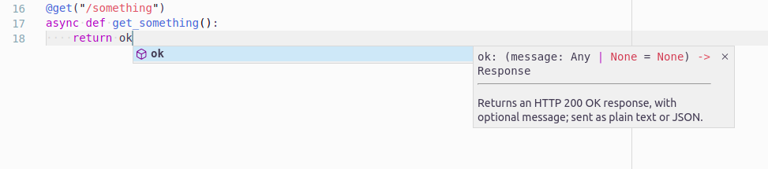

Responses¶
This page describes:
- How responses are handled.
- Helper functions to handle responses.
- Responses using asynchronous generators.
The Response class¶
A standard request handler in BlackSheep is expected to return an instance of
the blacksheep.Response class. Users of the framework can define
request handlers that return different kinds of objects. In such cases they are
normalized at application start-up to return instances of Response.
The following example shows how to use the low-level objects to create a response with status 200 and body "Hello, World":
from blacksheep import Application, Response, Content, get
app = Application()
@get("/")
def home() -> Response:
return Response(200, content=Content(b"text/plain", b"Hello, World!"))
BlackSheep uses these exact types to benefit from static typing and
compilation of Cython extensions. However, handling
responses this way is not comfortable for regular use. For this reason, a
number of helper functions are provided to create Response objects with a
more user-friendly code API.
For example, the json function in blacksheep.server.responses produces
a response object having a JSON body.
from blacksheep import Application, get, json
app = Application()
@get("/")
def home():
return json({"message": "Hello, World!"})
Produces the following response body:
The framework also allows to define a request handler this way:
from blacksheep import Application, get
app = Application()
@get("/")
def home():
return {"message": "Hello, World!"}
When a request handler doesn't specify a Response return type with type
annotations, the framework must check the function's return type at each call
(causing a small performance fee!), and automatically prepares a Response if
necessary.
Functions in blacksheep.server.responses¶
The table below describes the built-in functions to produce responses:
| Method | Description |
|---|---|
| ok | Returns an HTTP 200 OK response, with an optional message; sent as plain text or JSON. |
| status_code | Returns a plain response with the given status, and with an optional message; sent as plain text or JSON. |
| created | Returns an HTTP 201 Created response, to the given location and with optional JSON content. |
| accepted | Returns an HTTP 202 Accepted response, with an optional message; sent as plain text or JSON. |
| no_content | Returns an HTTP 204 No Content response. |
| json | Returns a response with application/json content, and the given status (default HTTP 200 OK). |
| pretty_json | Returns a response with indented application/json content, and the given status (default HTTP 200 OK). |
| text | Returns a response with text/plain content, and the given status (default HTTP 200 OK). |
| moved_permanently | Returns an HTTP 301 Moved Permanently response, to the given location. |
| redirect | Returns an HTTP 302 Found response (commonly called redirect), to the given location. |
| see_other | Returns an HTTP 303 See Other response, to the given location. |
| not_modified | Returns an HTTP 304 Not Modified response. |
| temporary_redirect | Returns an HTTP 307 Temporary Redirect response, to the given location. |
| permanent_redirect | Returns an HTTP 308 Permanent Redirect response, to the given location. |
| bad_request | Returns an HTTP 400 Bad Request response, with an optional message; sent as plain text or JSON. |
| unauthorized | Returns an HTTP 401 Unauthorized response, with an optional message; sent as plain text or JSON. |
| forbidden | Returns an HTTP 403 Forbidden response, with an optional message; sent as plain text or JSON. |
| not_found | Returns an HTTP 404 Not Found response, with an optional message; sent as plain text or JSON. |
| view | Returns a view rendered synchronously. |
| view_async | Returns a view rendered asynchronously. |
| file | Returns a binary file response with the given content type and optional file name, for download (attachment) (default HTTP 200 OK). This method supports being called with bytes, or a generator yielding chunks. |
Info
These functions can be imported directly from the blacksheep namespace.
For information on how to use these methods, refer to the type annotations provided in the code.

Info
Using an IDE like JetBrains PyCharm, or Visual Studio Code (as in the screenshot above), enables automatic completion and hints thanks to type annotations.
Response headers¶
To specify response headers use one of the following methods:
@get("/")
def home() -> Response:
response = json({"message": "Hello, World!"})
response.add_header(b"Example", b"Value")
# add supports multiple headers with the same name:
response.headers.add(b"X-Foo", b"Foo")
# set syntax overrides other headers with the same name:
response.headers[b"Set-Header-Overriding"] = b"Foo"
return response
BlackSheep requires specifying header names and values as bytes, not strings.
Setting cookies¶
To set a cookie, use the set_cookie method of the Response class:
from blacksheep import Application, get, json
from blacksheep.cookies import Cookie
app = Application()
@get("/")
def home():
response = json({"message": "Hello, World!"})
response.set_cookie(Cookie("foo", "value"))
return response
The set_cookie method is an abstraction layer on top of the
Set-Cookie response
header.
The following example shows how to set a cookie with HttpOnly and lasting
15 minutes.
from datetime import datetime, timedelta
from blacksheep import Application, Response, get, json
from blacksheep.cookies import Cookie
app = Application()
@get("/")
def home() -> Response:
response = json({"message": "Hello, World!"})
response.set_cookie(
Cookie(
"foo2",
"value2",
http_only=True,
expires=datetime.now() + timedelta(minutes=15),
)
)
return response
Cookie's options:
| Parameter | Type (default value) | Description |
|---|---|---|
| name | str |
Cookie's name. |
| value | str |
Cookie's value. |
| expires | datetime | null (null) |
The maximum lifetime of the cookie as an HTTP-date timestamp. If unspecified, the cookie becomes a session cookie. A session finishes when the client shuts down, and session cookies will be removed. |
| domain | str | null (null) |
Host to which the cookie will be sent. |
| path | str | null (null) |
Optional path to restrict access to the cookie. |
| http_only | bool (False) |
Optional boolean to forbid JavaScript access to the cookie. |
| secure | bool (False) |
Optionally instructs browsers to send the cookie only over HTTPS (or localhost). |
| max_age | int (-1) |
Optional number of seconds until the cookie expires. A zero or negative number will expire the cookie immediately. |
| same_site | CookieSameSiteMode (CookieSameSiteMode.UNDEFINED) |
Controls the cookie's Same-Site attribute. |
CookieSameSiteMode enum¶
| Value | Description |
|---|---|
| UNDEFINED | Doesn't set the Same-Site attribute, leaving the default to the client. |
| LAX | Sets Same-Site=Lax attribute. |
| STRICT | Sets Same-Site=Strict attribute |
| NONE | Sets Same-Site=None attribute |
- Strict: The browser sends the cookie only for same-site requests (that is, requests originating from the same site that set the cookie). If the request originated from a different URL than the current one, no cookies with the SameSite=Strict attribute are sent.
- Lax: The cookie is not sent on cross-site requests, such as calls to load images or frames, but is sent when a user is navigating to the origin site from an external site (e.g. if following a link). This is the default behavior if the SameSite attribute is not specified.
- None: The browser sends the cookie with both cross-site and same-site
requests. The
Secureattribute is automatically set whenSameSite=None.
Setting many cookies¶
Use the Response.set_cookies method to set several cookies at once.
@get("/")
def home() -> Response:
response = json({"message": "Hello, World!"})
response.set_cookies(
[
Cookie("A", "lorem"),
Cookie("B", "ipsum"),
]
)
return response
Unsetting cookies¶
Use the Response.unset_cookie method to delete a cookie that was previously
sent to a client.
@get("/")
def home() -> Response:
response = json({"message": "Hello, World!"})
response.unset_cookie("foo")
return response
The unset_cookie method is an abstraction layer, configuring a Set-Cookie
response header containing an instruction to remove a cookie by name.
Removing cookies¶
Use the Response.remove_cookie method to remove a cookie from the response
object before it's sent to the client. This method does not generate
a Set-Cookie header. Use unset_cookie if the intention is to instruct the
client to discard a previously sent cookie.
Response streaming¶
BlackSheep supports response streaming using StreamedContent objects bound
to a generator yielding bytes, like described in the following paragraph.
If the content length is not known in advance, chunked encoding is used by
default.
If the content length is known in advance, it can be set in the instance of
StreamedContent (in this case, it is responsibility of the user to ensure
the generator will return the correct amount of bytes).
Chunked encoding¶
The following example illustrates how response streaming can be used in
responses, using a StreamedContent object bound to a generator yielding
bytes.
import asyncio
from blacksheep import Application, Response, StreamedContent, get
app = Application()
@get("/chunked-text")
async def get_chunked_text(request):
async def provider():
yield b"Lorem "
await asyncio.sleep(0.01)
yield b"ipsum"
await asyncio.sleep(0.01)
yield b" dolor"
yield b" sit"
yield b""
return Response(200, content=StreamedContent(b"text/plain", provider))
Alternatively, it is possible to use the file function from
blacksheep.server.responses or directly from blacksheep:
import asyncio
from blacksheep import Application, ContentDispositionType, file, get
app = Application(show_error_details=True)
@router.get("/chunked-text")
async def get_chunked_text(request):
async def provider():
yield b"Lorem "
await asyncio.sleep(0.01)
yield b"ipsum"
await asyncio.sleep(0.01)
yield b" dolor"
yield b" sit"
yield b""
return file(
provider, "text/plain", content_disposition=ContentDispositionType.INLINE
)
Info
BlackSheep uses chunked encoding by default when serving static files.
Last modified on: 2025-04-22 08:29:25